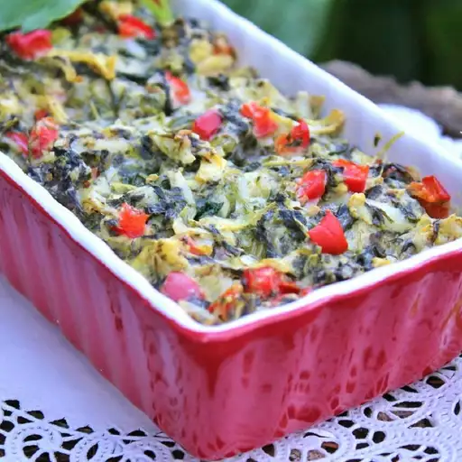

Hot Spinach Dip

Description:
A yummy hot vegetable dip! Serve with your favorite crackers.
Ingredients:
- 1 (10 oz) package frozen chopped spinach, thawed and drained
- 1/2 cup red bell pepper, diced
- 1 tablespoon minced garlic
- 1 (6.5 oz) jar artichoke hearts, drained and mashed
- 1/2 sour cream
- 1/2 cup parmesan cheese
- sale and ground black pepper to taste
- 1/4 cup heavy cream
Steps:
- Preheat oven to 350 degrees F (175 degrees C)
- Mix together spinach, bell pepper, garlic, artichokes, sour cream, and parmesan cheese. Season with salt and pepper. Mixture will be thick; add cream to thin to dip consistency. Spoon into a 1-quart baking dish.
- Bake for 20 minutes, or until bubbly. Serve with crackers.